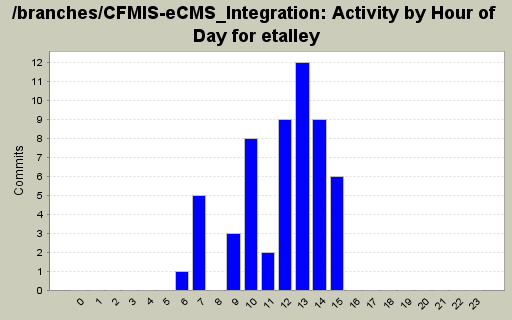
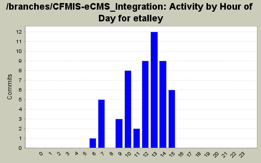
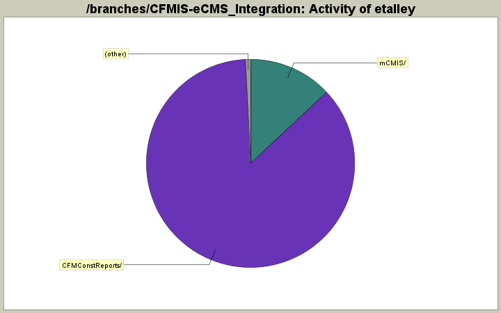

Activity by Clock Time



| Directory | Changes | Lines of Code | Lines per Change |
|---|---|---|---|
| Totals | 55 (100.0%) | 2478 (100.0%) | 45.0 |
| CFMConstReports/ | 28 (50.9%) | 2137 (86.2%) | 76.3 |
| mCMIS/ | 24 (43.6%) | 322 (13.0%) | 13.4 |
| mCMISIntegration/ | 1 (1.8%) | 17 (0.7%) | 17.0 |
| mCMIS/UserControls/ | 2 (3.6%) | 2 (0.1%) | 1.0 |

copy of RepActionsDue2.rdl that uses the new data structure. e.t.
0 lines of code changed in 1 file:
Overrite Kumar's report
240 lines of code changed in 1 file:
Modified RepCompletedProj.rdl to exclude references to Stage, Scheduleitem and Financial still missing physical completion. Retrieving total cost from fmsrecord. Begin and End date parameters removed due to its extraction from scheduleitems. All other parameters provided. e.t.
0 lines of code changed in 2 files:
Checking in most recent copy.
Created copy of RepAEContractPay.rdl which incorporates new table data modifications as follows.
1.Stage,ScheduleItem and Financial tables depreciated and removed from query.
2.Financials split into contract and fmsrecord table data so joins from fmsrecord to financials also removed.
3.Case statements hard coded to retrieve 'CD' and 'DD' stage types (applicable stages)
4.Joins to Contract and Fmsrecord based on contract numbers and contract-applicable stages established.
0 lines of code changed in 2 files:
Checking in most recent copy.
Created copy of RepAEContractPay.rdl which incorporates new table data modifications as follows.
1.Stage,ScheduleItem and Financial tables depreciated and removed from query.
2.Financials split into contract and fmsrecord table data so joins from fmsrecord to financials also removed.
3.Case statements hard coded to retrieve 'CD' and 'DD' stage types (applicable stages)
4.Joins to Contract and Fmsrecord based on contract numbers and contract-applicable stages established.
0 lines of code changed in 1 file:
Corrected RepMajorProjPipeLine2 name. e.t.
1 lines of code changed in 1 file:
1 lines of code changed in 1 file:
0 lines of code changed in 1 file:
Added RepMajorPipeLine2 to list of reports to select from. e.t.
2 lines of code changed in 2 files:
Added RepMajorPipeline entry to Script. e.t.
1 lines of code changed in 1 file:
Addressed #601
42 lines of code changed in 2 files:
3 lines of code changed in 1 file:
Made modifications to RepAlerts.rdl RepMajorProjPipeline2.rdl and added RepMajorProjPipeline.rdl from mcmis folder. e.t.
843 lines of code changed in 3 files:
Second draft of RepAlerts.rdl e.t.
328 lines of code changed in 1 file:
Modified Pipeline report to include updated requirements.
1. Added Project Type filter. (Projects, Subprojects, both)
2. Excluded various project status
3. Excluded station number 101
56 lines of code changed in 1 file:
Made initial modificiations e.t.
0 lines of code changed in 2 files:
12 lines of code changed in 1 file:
1 lines of code changed in 1 file:
modified original_contract_amount and current_contract_amount fields of this subreport to reflect the new fmsrecord object. e.t.
0 lines of code changed in 2 files:
Added most recent file.
609 lines of code changed in 1 file:
(14 more)